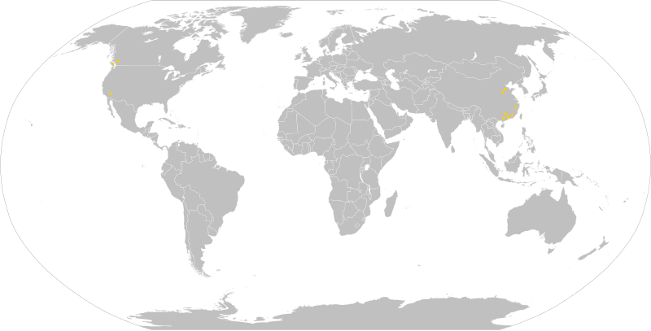

Edge Computing Distribution for AI Acceleration & CDN Deployment
This project offers a scalable edge computing platform that accelerates AI workloads and optimizes Content Delivery Networks (CDNs)
through a distributed network. By leveraging end-user devices, it reduces latency and costs for AI model training, data scraping, and content delivery.
AI Acceleration Components
Model Training: Utilize a distributed network to provide increased computational power (hashrate) at a lower
cost, offering an alternative solution for companies without data centers or those unwilling to invest in new infrastructure.
Data Scraping: Employ the distributed network for faster and more efficient data collection based on geographic
location. This enables the gathering of diverse datasets, such as price discrimination based on user devices and locations,
essential for training machine learning models.
CDN Deployment
Traditional CDNs can be expensive and limited in distribution. This project also implements a peer-to-peer CDN (PCDN) network formed
by end-user devices, allowing companies to benefit from lower costs and a wider distribution of content delivery points. This
enhances website performance and user experience globally.
Features
Distributed edge computing infrastructure leveraging end-user devices
Cost-effective AI model training without the need for dedicated data centers
Efficient and location-based data scraping for diverse datasets
Peer-to-peer CDN deployment for accelerated content delivery
Scalable, low-latency data processing and real-time analytics

Deployed Nodes
Back to Projects